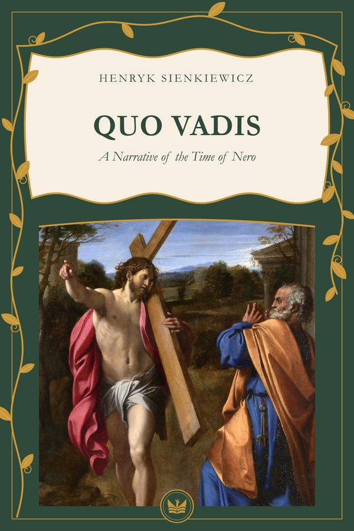

Quo Vadis: A Narrative of the Time of NeroFree EPUB and PDF
Which one? The PDF opens on any phone or computer. The EPUB is for reading apps (Google Play Books, Apple Books, Kindle or Kobo) and lets you enlarge the text.
Why read it
This one suits readers who want to feel what it was to be a Christian under persecution without opening a treatise. The love story of Vinicius and Lygia carries you along, and on the way it sets a glittering, hollow Rome beside a small community that lived on something else.
Summary
Rome under Nero: the patrician Vinicius falls in love with Lygia, a young Christian, and through her comes to know the persecuted community, Saint Peter and Saint Paul. A sweeping historical novel by an author who received the Nobel Prize in Literature in 1905. English translation by Jeremiah Curtin.
Quotes
Quo vadis, Domine?
If thou desert my people, I am going to Rome to be crucified a second time.
In two hundred or three hundred years the whole world will accept it. People will forget Jupiter, and there will be no God except Christ, and no other temples but Christian.
If ye have reared so many beautiful temples and statues to evil, revengeful, adulterous, and faithless divinities, what would ye not do in honor of one God of truth and mercy?
Moral rating
6 of 6: No drawbacks. See on delibris.org
Similar books
- The Confessions of St. Augustine · Saint Augustine of Hippo
- Orthodoxy · G. K. Chesterton
- The Imitation of Christ · Thomas à Kempis